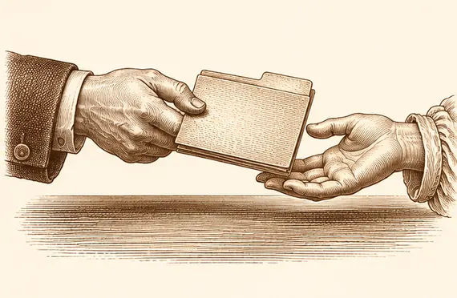

Propuesta académica
El museo guarda un secreto.
Un escape room educativo para el Museo Arocena. Reúne a tu equipo, conecta las pistas y reconstruye la historia de un archivo incompleto.
La experiencia
Un archivo incompleto.
Imagina que encuentras un expediente al que le faltan páginas. Una fecha en una ficha y un detalle en una obra parecen contar partes de la misma historia.
Tu equipo tendrá que seguir esas conexiones entre las piezas del museo, reunir las pistas y descubrir el código que completa el relato.
Cómo funciona
-

Reúne a tu equipo
Comparte el expediente. Cada integrante puede encontrar algo que los demás pasaron por alto.
-
Conecta las pistas
Observa fechas, símbolos y detalles de las piezas. Compara tus hallazgos con los de tu equipo.
-
Resuelve el misterio
Usa las conexiones que descubrieron para deducir el código final y reconstruir la historia.
Tu primera pista.
Ordena mentalmente las fichas de la más antigua a la más reciente. Escribe sus códigos en ese orden.
Acertijo de ejemplo con fichas ficticias.
-
Ficha A
- Año
- 1920
- Código
- 7
-
Ficha B
- Año
- 1780
- Código
- 2
-
Ficha C
- Año
- 1840
- Código
- 4
Detalles de la propuesta
Estos parámetros de la actividad presencial están por validar con el museo.
- Duración estimada
- 30–45 minutos
- Por equipo
- 3–5 personas
- Dificultad propuesta
- Introductoria
Preguntas frecuentes.
¿Qué es un escape room?
Es un juego en el que un equipo observa su entorno y resuelve acertijos para alcanzar un objetivo. En esta propuesta, la meta es reconstruir una historia del museo y descubrir un código final.
¿Necesito conocimientos previos?
Puedes empezar con lo que muestran las fichas. La experiencia se plantea para principiantes y en la demostración puedes pedir una pista en cualquier momento.
¿Es una experiencia de terror?
Es un misterio cultural sin terror. La intriga surge de encontrar conexiones entre las pistas, las piezas y sus historias.
¿Ya se puede jugar en el museo?
Por ahora puedes probar el acertijo de esta página. La actividad presencial es una propuesta académica del Tec de Monterrey, Campus Laguna. Las piezas, el espacio, las fechas y la operación quedan pendientes de validación con el Museo Arocena.